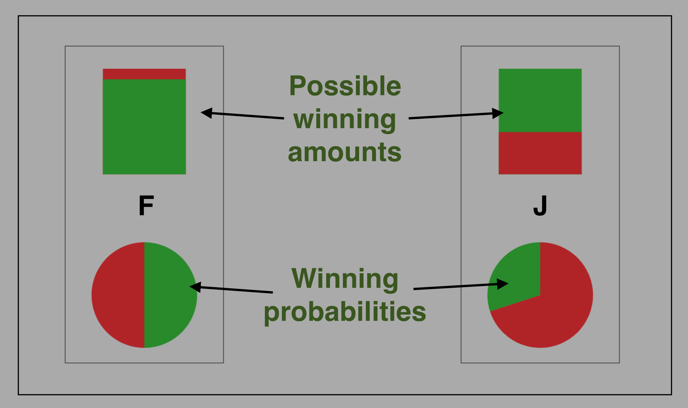

<!DOCTYPE html>
<html>

<head>
  <!-- Libraries -->
  <script src="js/jspsych-6.2.0/jspsych.js"></script>
  <!-- Plugins -->
  <script src="js/jspsych-6.2.0/plugins/jspsych-html-keyboard-response.js"></script>
  <script src="js/jspsych-6.2.0/plugins/jspsych-image-slider-response.js"></script>
  <script src="js/jspsych-6.2.0/plugins/jspsych-fullscreen.js"></script>
  <script src="js/jquery-3.5.0.min.js"></script>
  <script src="js/utilsHelper.js"></script>
  <script src="js/custom_jspsych-plugins/eye-tracking.js"></script>
  <script src="js/custom_jspsych-plugins/two-gamble-choice.js"></script>
  <script src="js/custom_jspsych-plugins/two-gamble-sequence.js"></script>
  <script src="js/custom_jspsych-plugins/binary-choice.js"></script>

  <link rel="stylesheet" href="js/jspsych-6.2.0/css/jspsych.css" />
  <link rel="stylesheet" href="js/custom_css/eye-tracking.css" />
  <link rel="stylesheet" href="js/custom_css/binary-choice.css" />
</head>

<body>
  <script src="js/webgazer/webgazer.js"></script>
  <script>
    // Experiment settings
    const calibrationDuration = 3; // this is in s
    const validationDuration = 2; // this is in s
    const fixationDuration = 1000; // this is in ms

    const doEyeTracking = false;
    const validateAfter = 10; // repeat validation and possibly trigger recalibration after `validateAfter` trials
    const showWebgazerPrediction = true; // For debugging, show the current webgazer predictions in eye tracking trials and during eye tracking setup

    var timeline = [];
    var trialCounter = 1;

    // Fixations
    var fixation = {
      type: "html-keyboard-response",
      on_start: () => (document.body.style.cursor = "none"),
      stimulus: '<span id="calibration_dot_instruction"></span>',
      choices: jsPsych.NO_KEYS,
      trial_duration: fixationDuration,
    };

    var fixationValidation = {
      type: "eye-tracking",
      doInit: false,
      doFaceDetection: false,
      doCalibration: false,
      showCalibrationMessage: false,
      showValidationMessage: false,
      calibrationMessage: "",
      validationMessage: "",
      doValidation: true,
      validationDots: 3, // this parameter was changed to "validationPoints" and now expects a list of coordinates, like [[50, 50], [20, 40], [70, 30]]. I could randomly sample 3 points
      validationTol: 130, // ideally these would adapt
      validationDuration: 2, // ideally, these would adapt
      showWebgazerPrediction: showWebgazerPrediction,
      on_start: () => (document.body.style.cursor = "none"),
      on_finish: function (data) {
        console.log(data);
        if (data.accuracy < 0.7) {
          repeatCalibration = true;
        }
      },
    };

    var repeatCalibration = false;
    recalibrationProcedure = {
      timeline: [
        {
          type: "html-keyboard-response",
          stimulus:
            "We need to re-calibrate the eye-tracker.<br><br>Press <b>SPACE BAR</b> to continue.",
          choices: ["spacebar"],
        },
        {
          type: "eye-tracking",
          doInit: false,
          doFaceDetection: true,
          doCalibration: true,
          doValidation: true,
          showWebgazerPrediction: showWebgazerPrediction,
          on_start: () => (document.body.style.cursor = "none"),
          on_finish: function () {
            repeatCalibration = false;
          },
        },
      ],
      conditional_function: function () {
        if (repeatCalibration) {
          return true;
        } else {
          return false;
        }
      },
    };

    // Conditional fixation procedures (do the validation procedure every N trials)
    var condFixVal = {
      timeline: [fixationValidation, recalibrationProcedure],
      conditional_function: function () {
        if (doEyeTracking && (Math.round(trialCounter % validateAfter) == 0)) {
          return true;
        } else {
          return false;
        }
      },
    };

    var condFixNoVal = {
      timeline: [fixation],
      conditional_function: function () {
        if (!doEyeTracking || (Math.round(trialCounter % validateAfter) != 0)) {
          return true;
        } else {
          return false;
        }
      },
    };

    /* Enter Full Screen */
    var fullscreenEnter = {
      type: "fullscreen",
      message: `<div>
            <h1>Welcome to this study</h1>
            <p>Before we begin, please</p>
            <ul>
            <li style="text-align: left;"><strong>close any unnecessary programs</strong></li>
            <li style="text-align: left;"><strong>close any other browser tabs </strong>that could produce<strong> popups </strong>or<strong> alerts</strong></li>
            <li style="text-align: left;"><strong>mute </strong>your <strong>cell phone</strong> and make sure that it will not distract you</li>
            </ul>
            <p>This will help run this study more smoothly.</p>
            <p>The study will switch to fullscreen mode when you press the button below. <br />Once this study has started, <strong>please do not exit fullscreen mode</strong>.</p>
                            </div>`,
      fullscreen_mode: true,
      on_finish: () => (document.body.style.cursor = "none"),
      button_label: "Switch to fullscreen and continue",
    };

    var eyeTrackingInstruction1 = {
      type: "html-keyboard-response",
      stimulus: `<div>
                            <h1>Eye-tracking</h1>
            <p><br>This study uses your webcam to infer your eye-movements.<br>
              Before we begin with the study, we need to turn on and adjust your webcam for eye-tracking.</p>
            <p>There are three parts to this process:</p>
            <ol>
            <li style="text-align: left;"><strong>Camera setup</strong></li>
            <li style="text-align: left;"><strong>Calibration</strong></li>
            <li style="text-align: left;"><strong>Validation</strong></li>
            </ol>
            <p>Press the <strong><em>SPACE BAR</em></strong> to proceed start with <em>Step 1: Camera setup</em>.</p>
                            </div>`,
      post_trial_gap: 500,
      on_start: function () {
        document.body.style.cursor = "none";
      },
      choices: ["spacebar"],
    };

    /* Eye Tracking Setup */
    var calibrationMax = 3;
    var calibrationAttempt = 0;
    var success = false; //update if there's a success
    var eye_calibration_state = {
      doInit: true,
    };

    var init_flag = function () {
      if (calibrationAttempt == 0) {
        return true;
      } else return false;
    };

    var validationTols = [130, 165, 200];
    var validationAccuracies = [0.8, 0.7, 0.6];

    var eyeTrackingInitialSetup = {
      timeline: [
        {
          type: "eye-tracking",
          doInit: () => init_flag(),
          doFaceDetection: true,
          doCalibration: true,
          doValidation: true,
          calibrationDuration: calibrationDuration,
          validationDuration: validationDuration,
          showVideoCalibration: false,
          showVideoValidation: false,
          validationTol: validationTols[calibrationAttempt],
          faceDetectionThreshold: 0.7,
          showWebgazerPrediction: showWebgazerPrediction,
          showCalibrationMessage: true,
          showValidationMessage: true,
          on_finish: function (data) {
            console.log("data.validationPoints:")
            console.log(data.validationPoints)
            console.log(
              "Hit ratio check failed?",
              JSON.parse(data.validationPoints)[0].hitRatio == null
            );
            console.log(
              "Hit ratio:",
              JSON.parse(data.validationPoints)[0].hitRatio
            );
            if (JSON.parse(data.validationPoints)[0].hitRatio == null) {
              jsPsych.endExperiment(
                `<h1>Apologies</h1>
                                The webcam calibration has failed. We can't proceed with the study.<br>
                                You will be compensated for trying to participate.
                                `
              );
            } else {
              calibrationAttempt++;
              console.log("Accuracy was", data.accuracy);
              if (
                data.accuracy >= validationAccuracies[calibrationAttempt - 1]
              ) {
                success = true;
              } else {
                console.log("Starting another calibration attempt.");
              }
              if (!success && calibrationAttempt == calibrationMax) {
                jsPsych.endExperiment(
                  `<h1>Apologies</h1>
                                The webcam calibration has failed. We can't proceed with the study.<br>
                                You will be compensated for trying to participate.
                                `
                );
              }
            }
          },
        },
      ],
      loop_function: () => calibrationAttempt < calibrationMax && !success,
    };

    /* Free viewing gamble Task */

    var freeGambleInstruction = {
      type: "html-keyboard-response",
      on_start: function () {
        webgazer.pause(), webgazer.clearData();
      },
      stimulus: `<div>
                            <font size=120%;>Task 1: Gamble choice</font>
                            <br><br><br>
                            
                            <br><br>
                            Now on to the main task. In the following you will make repeated choices between two risky gamble lotteries.<br>
                            Each lottery represents a possibility to win an amount of money with some probability.
                            <br><br>
                            Each lottery's <b>winning probability</b> is represented by a pie chart. The more <b><font color='ForestGreen'>green</font></b> in the pie chart, the higher the probability that the lottery will result in a win.
                            <br><br>
                            Its <b>winning amount</b> is represented by a bar. The more <b><font color='ForestGreen'>green</font></b> in the bar, the higher the possible winning amount.
                            <br><br>
                            In each trial, choose between the left and right lotteries, by pressing the <b>F</b> key for the left, or the <b>J</b> for the right lottery. Place your left and right index finger on these keys now.
                            <br><br>
                            Before each trial, you will see a cross at the middle of the screen. Please try to look at this cross until it disappears.
                            <br><br>
                            When you are ready, press the <b>SPACE BAR</b> to start.
                            </div>`,
      post_trial_gap: 500,
      choices: ["spacebar"],
    };

    freeGambleChoice = {
      type: "two-gamble-choice",
      stimulus: function () {
        stim = {
          p0: jsPsych.randomization.sampleWithoutReplacement(
            [0.6, 0.7, 0.8, 0.9],
            1
          )[0],
          p1: jsPsych.randomization.sampleWithoutReplacement(
            [0.1, 0.2, 0.3, 0.4],
            1
          )[0],
          m0: jsPsych.randomization.sampleWithoutReplacement(
            [0.1, 0.2, 0.3, 0.4],
            1
          )[0],
          m1: jsPsych.randomization.sampleWithoutReplacement(
            [0.6, 0.7, 0.8, 0.9],
            1
          )[0],
        };
        return stim;
      },
      on_finish: function () {
        trialCounter++;
      },
      choices: ["F", "J"],
      trial_duration: 10000,
    };

    freeGambleProcedure = {
      timeline: [condFixNoVal, condFixVal, freeGambleChoice],
      repetitions: 5,
    };

    /* Sequential presentation gamble choice task */
    var seqGambleInstruction = {
      type: "html-keyboard-response",
      on_start: function () {
        webgazer.pause(), webgazer.clearData();
      },
      stimulus: `<div>
                            <font size=120%;>Task 2: Sequential presentation </font>
                            <br><br><br>
                            In the next trials, you will make choices between two risky gambles.<br>
                            Information over the gambles is shown to you sequentially.<br>
                            After the presentation sequence, you will be prompted to make a choice <b>within 1 second</b>!<br>
                            Press the <b>F</b> key to choose the left gamble and the <b>J</b> key to choose the right gamble.<br>
                            Place your fingers on these keys now.</b>
                            When you are ready, press the <b>SPACE BAR</b> to start.
                            </div>`,
      post_trial_gap: 1000,
      choices: ["spacebar"],
    };

    seqGambleChoice = {
      type: "two-gamble-sequence",
      stimulus: function () {
        stim = {
          p0: jsPsych.randomization.sampleWithoutReplacement(
            [0.6, 0.7, 0.8, 0.9],
            1
          )[0],
          p1: jsPsych.randomization.sampleWithoutReplacement(
            [0.1, 0.2, 0.3, 0.4],
            1
          )[0],
          m0: jsPsych.randomization.sampleWithoutReplacement(
            [0.1, 0.2, 0.3, 0.4],
            1
          )[0],
          m1: jsPsych.randomization.sampleWithoutReplacement(
            [0.6, 0.7, 0.8, 0.9],
            1
          )[0],
        };
        return stim;
      },
      sequence: jsPsych.timelineVariable("sequence"),
      choices: ["F", "J"],
      choiceTimeout: 1000,
      on_finish: function () {
        trialCounter++;
      },
      doEyeTracking: false,
    };

    var sequence_altwise = {
      durations: [1500, 1000, 1500, 1000],
      alternatives: [0, 1, 0, 1],
      attributes: ["all", "all", "all", "all"],
    };

    var sequence_attwise = {
      durations: [1500, 1000, 1500, 1000],
      alternatives: ["all", "all", "all", "all"],
      attributes: ["p", "m", "p", "m"],
    };

    // var sequence_single = {
    //   durations: [1500, 1000, 1500, 1000],
    //   alternatives: [0, 1, 1, 0],
    //   attributes: ["p", "m", "p", "m"],
    // };

    timeline_variables = [
      { sequence: sequence_altwise },
      { sequence: sequence_attwise },
      // { sequence: sequence_single },
    ];

    seqGambleProcedure = {
      timeline: [condFixNoVal, condFixVal, seqGambleChoice],
      timeline_variables: timeline_variables,
      randomize_order: true,
      repetitions: 2,
    };

    /* Food rating task */
    var foodImages = [];
    const nFoodImages = 5;
    for (var i = 0; i < nFoodImages; i++) {
      foodImages.push("./img/food-images/transparent/" + i + ".png");
    }

    var foodRatingInstruction = {
      type: "html-keyboard-response",
      stimulus: `<div>
                            <h1>Food rating</h1>

                            <p>Press the <strong><em>SPACE BAR</em></strong> to proceed start with the <em>Food rating task</em>.</p>
                                            </div>`,
      post_trial_gap: 500,
      choices: ["spacebar"],
    };

    function getRandomInt(min, max) {
      return Math.floor(Math.random() * (max - min + 1)) + min;
    }

    var nonZeroItems = [];

    ratingImages = jsPsych.randomization.shuffle(foodImages);
    var foodRatingProcedure = {
      type: "image-slider-response",
      // stimulus_height: 320,
      stimulus_width: 500,
      timeline: ratingImages.map((img) => ({
        stimulus: img,
      })),
      labels: ["0", "1", "2", "3", "4", "5", "6", "7", "8", "9", "10"],
      min: 0,
      max: 10,
      slider_start: () => getRandomInt(0, 10),
      require_movement: false,
      prompt: "<p>How much do you like this food item?</p>",
      slider_width: 500,
      response_ends_trial: true,
      on_finish: (data) => {
        console.log(data);
        if (data.response > 0) {
          nonZeroItems.push(data.stimulus);
        }
        console.log(nonZeroItems);
      },
    };

    /* Food choice task */
    var foodChoiceInstruction = {
      type: "html-keyboard-response",
      stimulus: `<div>
                            <h1>Food choice</h1>

                            <p>Press the <strong><em>SPACE BAR</em></strong> to proceed start with the <em>Food choice task</em>.</p>
                                            </div>`,
      post_trial_gap: 500,
      choices: ["spacebar"],
    };

    var foodChoiceProcedure = {
      timeline: [
        condFixNoVal,
        condFixVal,
        {
          type: "binary-choice",
          stimulus: () =>
            jsPsych.randomization.sampleWithoutReplacement(nonZeroItems, 2),
          choices: ["F", "J"],
          on_finish: function (data) {
            trialCounter++;
            console.log(data);
          },
          doEyeTracking: true,
        },
      ],
      repetitions: 5,
    };

    /* Experiment procedure */
    images = [
      "./img/et-instructions/et-instruct_0.png",
      "./img/et-instructions/et-instruct_1.png",
      "./img/task-instructions/gamble-instruction.png",
    ];

    jsPsych.init({
      timeline: [
        fullscreenEnter,
        // foodRatingInstruction,
        // foodRatingProcedure,
        // eyeTrackingInstruction1,
        // eyeTrackingInitialSetup,
        // foodChoiceInstruction,
        // foodChoiceProcedure,
        // freeGambleInstruction,
        // freeGambleProcedure,
        seqGambleInstruction,
        seqGambleProcedure,
      ],
      preload_images: [images, foodImages],
      on_finish: function () {
        webgazer.end();
        jsPsych.data.displayData("json");
      },
    });
  </script>
</body>

</html>